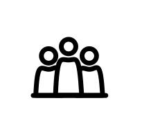

- avance
- retour
- suivant
 précedent
précedent- sauvegarder
- effacer
- supprimer
- fermer
- ouvrir
- fichier
- archives
- jouer
 écouter
écouter- musique
 vidéo
vidéo- audio
- texte
- télécharger
- rechercher
- zoomer
- discussion
 message
message- groupe
- profil
- compte
- ordonner
précedentécoutervidéomessageLa pollinisation est, chez les plantes à fleurs, le transport du pollen (poudre contenant les cellules mâles) des étamines sur le pistil qui renferme les ovules.
En butinant de fleur en fleur pour sucer leur jus sucré, appelé nectar, des insectes pollinisateurs, comme les abeilles et les bourdons, sans même s'en apercevoir, transportent du pollen vers le pistil des fleurs voisines de même espèce.